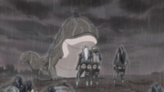
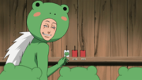
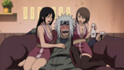
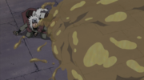
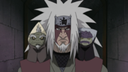

Jiraiya (自来也) was one of Konohagakure's Sannin. Famed as a hermit and pervert of stupendous ninja skill, Jiraiya travelled the world in search of knowledge that would help his friends, the various novels he wrote, and, posthumously, the world in its entirety – knowledge that would be passed on to his godson and final student, Naruto Uzumaki.
| Birthdate | November 11 |
| Sex | Male |
| Age | Part I: 50–51 |
| Part II: 54 | |
| Status | Deceased |
| Height | Part I: 191.2 cm |
| Weight | Part I: 87.5 kg |
| Blood type | B |
| Classification | Sage |
| Sannin | |
| Occupation | Writer |
| Affiliation | Konohagakure |
| Mount Myōboku | |
| Team | Team Hiruzen |
| Ame Orphans | |
| Team Jiraiya | |
| Family | Naruto Uzumaki (Godson) |
| Ninja Rank | Jōnin |
| Ninja Registration | 002301 |
| Academy Grad. Age | 6 |
| Nature Type | Fire Release |
| Wind Release | |
| Earth Release | |
| Water Release | |
| Yin Release | |
| Yang Release | |
| Tools | Chakra-Suppressing Seal |
| Fūma Shuriken | |
| Hidden Kunai Mechanism | |
| Stone Swords |
After he graduated from Konoha's Ninja Academy, Jiraiya was teamed with Orochimaru and Tsunade under the leadership of Hiruzen Sarutobi. Hiruzen gave them a bell test for the team's first exercise, during which Jiraiya repeatedly fell for Hiruzen's tricks, and for failing to acquire a bell, he was tied to a stump as punishment. Hiruzen encouraged Jiraiya to be more like Orochimaru, but Jiraiya countered that his Transparent Escape Technique was a fair testament to his skills, as he could spy on bathing women without getting caught: Hiruzen offered to accompany him to see if this was true. Jiraiya had a certain interest in Tsunade from their first meeting, and when her breasts developed, she became a frequent target of his peepings. She nearly killed him when she caught him on one occasion, forcing him to be more discreet about his interests.
Jiraiya at some point discovered Mount Myōboku, the residence of the toads; in the anime, he was brought there when he tried to summon a toad without first having a contract with them. Fukasaku trained Jiraiya in their ways, most prominently senjutsu. While he was at Mount Myōboku, the Great Toad Sage made a prediction about Jiraiya: that he would travel the world and during that time meet the Child of the Prophecy, a student who would grow up to either save or destroy the world depending upon how Jiraiya taught them.
Although their team under Hiruzen's leadership had disbanded, Jiraiya, Orochimaru, and Tsunade continued fighting together during the Second Shinobi World War. During one such fight in Amegakure, they were the only three to survive an encounter with Hanzō, for which accomplishment Hanzō dubbed them Konoha's "Legendary Sannin". After the battle, three war orphans approached them and asked to be taught ninjutsu. Jiraiya, guilty for his involvement in the war, decided to stay in Ame for a time in order to look after them. Shortly after he joined them, he discovered that one of the orphans, Nagato, possessed the Rinnegan, once used by the Sage of the Six Paths to save the world. Jiraiya decided that Nagato was the Child of the Prophecy, and as such agreed to teach the orphans ninjutsu so that he might guide Nagato towards the world's salvation.
Nagato was a kind child, torn between his desire to not hurt others and his wish to protect Yahiko and Konan. Jiraiya comforted Nagato that it was enough to want to protect people one holds to be important, as the world is plagued with seemingly endless conflict. Nagato decided that it was possible to end the constant bloodshed and, though he didn't know how, that he would someday find the path to peace. Jiraiya was inspired by Nagato's words and started writing what would become The Tale of the Utterly Gutsy Shinobi. After three years of training the orphans, Jiraiya decided they were ready to forge out on their own and he returned to Konoha; he left them a finished copy of Gutsy Shinobi, dedicated to Nagato. News of the orphans' deeds would reach him from time to time, but eventually he heard that they'd all died.

At some point Jiraiya lead a Konoha team of his own, and started to suspect that one student, Minato Namikaze, might be the Child of the Prophecy because of his natural genius. As such, he took Minato as his disciple and taught him many of his skills; Minato would eventually teach Jiraiya the Rasengan. Gutsy Shinobi did not sell well when it was released. Minato - selected as Konoha's Fourth Hokage after Jiraiya refused the position - enjoyed the book, finding the main character very much like Jiraiya. He decided to name his and Kushina Uzumaki's then-unborn son "Naruto" after the main character, hoping that their Naruto would be just as determined as the character (and thus its author). Jiraiya tried to convince them not to since that would make him Naruto's godfather, but Minato and Kushina insisted this was a good thing. Minato died during the Nine-Tailed Demon Fox's Attack, giving his life to seal the Nine-Tails into the newborn Naruto; as one of his last acts, Minato sent Jiraiya Gerotora, on whose stomach he wrote the key to Naruto's seal. Jiraiya guessed that Minato wanted him to help Naruto gain control of the Nine-Tails' power, though he couldn't guess what that power would be needed for.
Although Orochimaru had always been his better, someone that Hiruzen pointed to as an example for Jiraiya to live up to, Jiraiya considered Orochimaru to be one of his closest friends. For this reason, when Orochimaru eventually defected from Konoha, Jiraiya pursued him and tried to convince him to return. Orochimaru refused and attacked Jiraiya in order to secure his escape. For a time, Jiraiya tried to find a deeper meaning in Orochimaru's betrayal, something that, if changed, would bring Orochimaru back. He could ultimately come up with nothing. From that point onward, Jiraiya started following Orochimaru's movements as well as those of Akatsuki, an organisation which Orochimaru eventually joined. His investigations often took him away from the village, preventing Jiraiya from becoming Fifth Hokage like Hiruzen wanted him to.
Jiraiya was generally light-hearted and gregarious, making jokes at his own expense and giving a mirthful laugh about it afterwards. In his interactions with others, he liked to pretend to be smug or selfish, upsetting them so that he could further rile them up with his humour. Even when entering combat he did not miss an opportunity to be flashy and over-the-top, striking kabuki poses and giving dramatic self-introductions; these intros were often interrupted in some way, and Jiraiya was quick to express his annoyance at whoever was responsible. Friends and foes alike were fond of Jiraiya for his eccentricities, admiring that somebody so seemingly irreverent could in actuality be an extremely competent shinobi: he was deeply loyal to Konoha despite how often he is away from it, not hesitating to threaten to kill Tsunade if she betrayed the village, despite their long history. Jiraiya also demonstrated no hesitation in attempting to destroy his former best friend Orochimaru in retribution for the death of their teacher, nor in attempting to dispatch his former pupil Nagato when he learned Nagato was the true leader of Akatsuki, despite the pain it brought him. Jiraiya felt that his personality quirks render him incapable of being Hokage, as he either lacked the responsibility for the position or he had, through his past infractions and failures, proven unworthy of such an honour.
Despite being seen as an eccentric troublemaker in his youth, Jiraiya proved to be an exemplary and competent Shinobi. Jiraiya would establish a vast information network across the countries and in battle demonstrated the ability to both recognise and analyse threats and danger on short notice. Jiraiya was also capable of coming up with quick gambits and new strategies in the middle of battle based on his keen observations.
Jiraiya was a self-proclaimed super-pervert with no equal. His favourite hobby was spying on women while they bathe, a passion he flaunted openly and in fact took pride in because of how infrequently he was caught. Despite this, Jiraiya disliked it when Naruto Uzumaki referred to him as the "Perverted Hermit" (エロ仙人, Ero-sennin, English TV: Pervy Sage) in front of others. With the "research" from his peeping, Jiraiya wrote a series of adult novels called Icha Icha. The novels were based on his personal experiences in love - particularly his rejections by Tsunade - retold in a comical way. The books were wildly popular, giving his chequebook a balance that is "filled with zeroes"; this fact did not stop him from taking Naruto's money when he got the chance and spending it on alcohol and women. In the anime, Naruto ghost-writes an Icha Icha book without anybody noticing, suggesting that either Naruto can write like an adult, or that Jiraiya's writing abilities were no better than a child's. Tsunade suspected it was the latter, as she notes that a report Jiraiya wrote when he was younger was poorly written and accompanied by crude crayon illustrations.
Jiraiya's perversion has backfired on him a number of times. When he first meets Naruto, he has no interest in training him. Naruto convinces him to change his mind by using the Sexy Technique, which Jiraiya so strongly approves of that he asks Naruto to continue to use it for the duration of their training. Itachi Uchiha and Kisame of Akatsuki later hypnotise an attractive woman to lure Jiraiya away from Naruto so that they can try to capture him; though it works at first, Jiraiya quickly realises that women aren't usually attracted to him, allowing him to return to Naruto in time to rescue him. When he was younger, he spied on Tsunade while she was bathing and, when she caught him, she broke both of his arms, six of his ribs, and ruptured a number of organs as punishment. Ever since, he's used greater discretion in expressing his interests in Tsunade, careful to make his advances come off only as playful. Jiraiya considers his inability to win Tsunade's heart to be one of the greatest failures of his life. Despite his boisterous nature, Jiraiya was plagued by doubts and insecurities that his life was nothing more than a series of failures. Being unable to save Orochimaru weighed heavily on him, as did the deaths of his sensei the Third Hokage, and his student the Fourth Hokage. Jiraiya considered his achievements paltry things next to the previous four Hokage and desired a death as glorious as their own. In his final moments, Jiraiya expressed his pride in realising a heroic death that was "just barely glorious, but glorious indeed".
Despite his self deprecation, one of Jiraiya's defining feature was his indomitable spirit and drive to never give up. Despite the multitude of failures he suffered in life, he never succumbed to despair, always forging ahead as he felt a shinobi must. Against Orochimaru, Jiraiya revealed his belief that the truest essence of the shinobi was one who endured and fought on no matter what they faced, regardless of inborn talent or genius. Even mortally wounded, Jiraiya's willpower was so powerful that he willed his own heart to begin beating again in order to impart a final message to Konoha. He would pass these beliefs and drive on to his pupils.
Perhaps Jiriaya's greatest contribution to the world was his abilities as a teacher, something even he felt he failed in. Driven by the prophecy he would one day find the world's saviour, Jiraiya would mentor three of the most powerful shinobi in history, Nagato, Minato and Naruto, imparting his belief in the spirit of a shinobi to all three. While he could be harsh and distant to Naruto at first, Jiraiya held a genuine love for the boy and took time to make certain he acted like a parental figure as opposed to merely teacher and student, even buying ice cream to share with him when Naruto was depressed at his lack of a family. Even in death, Jiraiya's last thoughts were of Naruto, who he entrusted the world's salvation to. In the anime, before departing for the afterlife, Jiraiya's spirit would use its final moments to clap Naruto on the shoulder in a final show of affection.
While he rarely revealed it outwardly, Jiraiya was a great believer in peace and held a deep longing to change the hatred inherent in the world. While he desired to find an answer to the cycle of hatred that plagued the world, he was never been able to come up with a way to do so. In the anime, Jiraiya revealed that his parents weren't killed, so he was accused of not being able to understand what Orochimaru went through. He never had children of his own, for which reason he thought of Minato Namikaze as his son and, by extension, thought of Naruto as his grandson. Jiraiya stated simply that to be happy was not his fate; Tsunade doubted he believed his own words. Under his bluster, Jiraiya remained a fundamentally kind man who treasured those close to him, maintaining a strong faith in the next generation, especially those he personally trained and Naruto in particular, believing that Naruto would be able to create and enjoy the world that Jiraiya could only dream of. When he died, Jiraiya decided that, despite his numerous failures, the successes of his time with Naruto made everything worthwhile.
Jiraiya was a tall and well-built man in adulthood with fair skin. He had waist-length, spiky white hair that he usually ties back into a pony tail, with two shoulder-length bangs framing his face. There were red lines under his eyes which extended further down his face as he got older, going all the way to the bottom by the time he was an adult. By the time he was middle-aged, he developed wrinkles around the corners of his mouth and a wart on the left side of his nose. Following an encounter with Naruto's Version 2 form, he received a large scar on his chest. His usual attire consisted of a green short shirt kimono and matching pants, under which he wore mesh armour that is visible at his wrists and ankles. He also wore hand guards, a black belt, traditional Japanese wooden sandals, and a red haori with two yellow circles on each side. He often carried a large scroll on his back, and had a tattoo on his left palm, and he wore a horned forehead protector with the kanji for "oil" (油, abura), which denoted his affiliation with Mount Myōboku.
Like his former genin teammates, Jiraiya became an exceptionally powerful shinobi, hailed as one of the greatest ninja of his generation and that Konoha ever produced. His true recognition came during the Second Shinobi World War when he was dubbed as a Sannin, a title which made the Uchiha Clan and Seven Ninja Swordsmen of the Mist pale in comparison. Kisame Hoshigaki viewed Jiraiya him as being in a league above himself, and Itachi Uchiha believed that at best he would stalemate with Jiraiya in battle even with assistance. His skill made him a jōnin and was offered to become the Hokage three times, plus would have been offered it a fourth time had he lived longer. Kakashi, also among the most powerful shinobi Konoha ever produced, found the idea of Jiraiya being single-handedly defeated absurd. In truth, while later killed by the assumed Akatsuki leader Nagato, the latter openly admitted that he would have lost had Jiraiya known the secret of the Six Paths of Pain, which Tobi feels is a major testament to the Sannin's abilities. Upon death, he became one of the individuals Kabuto Yakushi most wanted to reincarnate to make use of Jiraiya's might.
Chakra and Physical Prowess
Jiraiya has chakra reserves large enough to summon Gamabunta and chakra potent enough to use senjutsu. Jiraiya also was masterful with his chakra control, able to perform a Rasengan in both hands at the same time, or even carve a message just using his chakra despite it being disrupted. He also was knowledgeable enough of genjutsu to teach others how to break free from it. His raw might is also considerable, able to fling Naruto several metres with a single finger tap. In the anime, he is shown lifting and throwing large boulders, as well as kicking away some of the Giant Multi-Headed Dogs.
Jiraiya was also remarkably resilient, able to withstand a lot of damage before going down. He could survive a full on kick from Might Guy with barely a scratch, and even attacks from summons as big as Gamabunta, such as the Giant Ox. Due to this resilience, he has only been brought to the brink of death twice: against Naruto Uzumaki's Four-Tailed Form and Tsunade's monster strength, and even Nagato had a difficult time inflicting lethal damage on his old master using the Six Paths of Pain.
Ninjutsu
Jiraiya is a ninjutsu master, who is famed as the "Toad Sage" (蝦蟇仙人, Gama Sennin) because of his affiliation with the toads of Mount Myōboku. This affiliation is most commonly displayed through summoning toads, either to fight alongside him in battle or simply summoning a toad's œsophagus to cover an area and restrict any movements within that area. Other toad-based skills include spitting oil from his mouth, hiding himself within a target's shadow to control their actions undetected, and using toads to infiltrate sensitive areas.
Apart form his toad-based techniques, he is equally skilled in a variety of other styles. He can grow and manipulate his hair, either to bind and destroy targets or to surround him as a defense, injuring any who comes into contact with him. He is also able to use the Rasengan — a destructive ball of compressed chakra — as well as its improved version, the Big Ball Rasengan. His prowess with the Rasengan is shown to be comparable to the creator, Minato.

Jiraiya is well-versed in fūinjutsu, able to deduce the workings of Naruto's Eight Trigrams Sealing Style within moments of seeing the seal's design. He also quickly notices the seal is being restricted, and as such easily removes the restriction. He can create seals for others that they can use to suppress the chakra of those who have been applied with Jiraiya's seal. He also displays a certain skill for barrier ninjutsu, erecting barriers to either detect all movements within a wide radius or toad-themed barriers for him to take shelter in. In the anime, he can also apply a seal on people that acts as a powerful protection from chakra-absorbing techniques.
Jiraiya can utilise the natures of Fire, Earth, Water, Wind, Yin and Yang Release. With Fire Release, he can a shoot a blast of fire that he can combine with his toad's oil to make for an even more devastating attack. With Earth Release, he can create a swamp to trap targets in and massive defensive walls.
Senjutsu
Jiraiya was taught how to use senjutsu by Fukasaku, which he can use to increase his speed, durability, and physical strength. He can also use it to empower his other ninjutsu, such as the Ultra-Big Ball Rasengan. Before he can gain these benefits, Jiraiya must enter Sage Mode, which he does not have complete mastery of. This causes his Sage Mode form to make him more toad-like in appearance, such as warts and webbed hands and feet, although his frog-like legs enable him to jump better. Using Sage Mode requires his supply of natural energy be constantly replenished, something that is difficult to do while in combat. For this reason, Jiraiya summons Fukasaku and Shima and fuses them to his body, having them gather natural energy for him. As an added bonus, Fukasaku and Shima can combine attacks with Jiraiya's, as with the Sage Art: Goemon, or they can perform jutsu that he can't, as with genjutsu.
Intelligence
Despite what his goofy and eccentric nature, Jiraiya is actually very shrewd in the field. His specialty is intelligence gathering, having a spy network that runs throughout the Five Great Shinobi Countries that he can use to gain information about a particular person or group to be used to his or his allies' advantage. In combat, he is very perceptive; Jiraiya observes all of the opponents' various actions, forms a theory about the how and why, and uses that theory to try and capitalise in the battle. He has repeatedly proven to be a very talented teacher, as all his students went on to become very powerful and well-known shinobi. His memory is very good; as he was dying, he was able to craft a coded message using the page numbers of Icha Icha Tactics, with the first word on each page serving as his message.